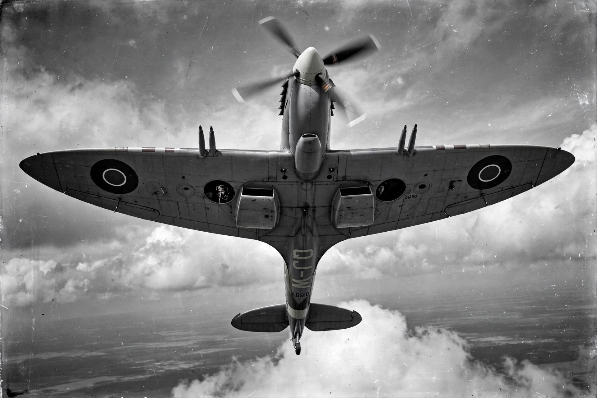

Supermarine Spitfire
From Wikipedia, the free encyclopedia

A Spitfire in flight.The Supermarine Spitfire is a British single-seat fighter aircraft used by the Royal Air Force and other Allied countries before, during and after the Second World War. Designed by R. J. Mitchell around the Rolls-Royce Merlin engine, with a distinctive elliptical wing, it became the symbol of the Battle of Britain (1940). Over 20,000 Spitfires and naval Seafires were built in dozens of variants, and the type served into the 1950s; around 70 remain airworthy today.
Design and development
Mitchell\'s Type 300 married a thin elliptical wing — low drag, eight .303 Browning machine guns — to the new Merlin V12. First flown in March 1936, it exceeded 350 mph, delighting test pilot Jeffrey Quill. Later marks with the more powerful Griffon engine, cannon armament and bubble canopies kept pace with the Fw 190 and late-war threats.
Service
Spitfires defended Britain in 1940 alongside the more numerous Hurricane, then served as fighter-bombers, photo-reconnaissance aircraft (unarmed, very fast PR variants) and carrier-based Seafires across every theatre. Public \'Spitfire Funds\' let communities sponsor aircraft, deepening the type\'s legend.
Legacy
The Spitfire is Britain\'s most beloved aircraft, centrepiece of commemorative flypasts with the RAF\'s Battle of Britain Memorial Flight. Mitchell died of cancer in 1937, aged 42, having seen only the prototype fly.